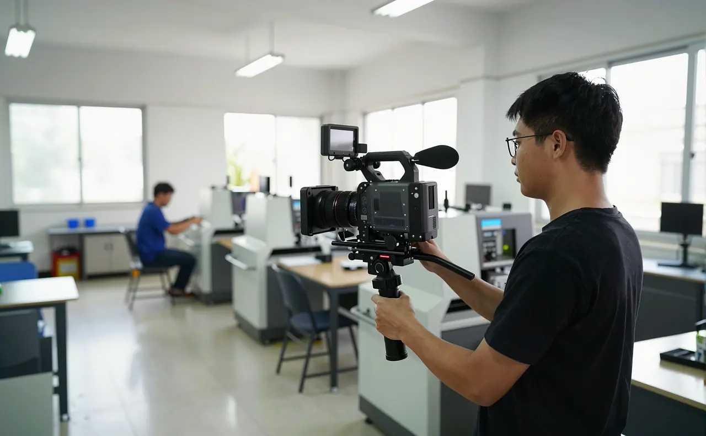
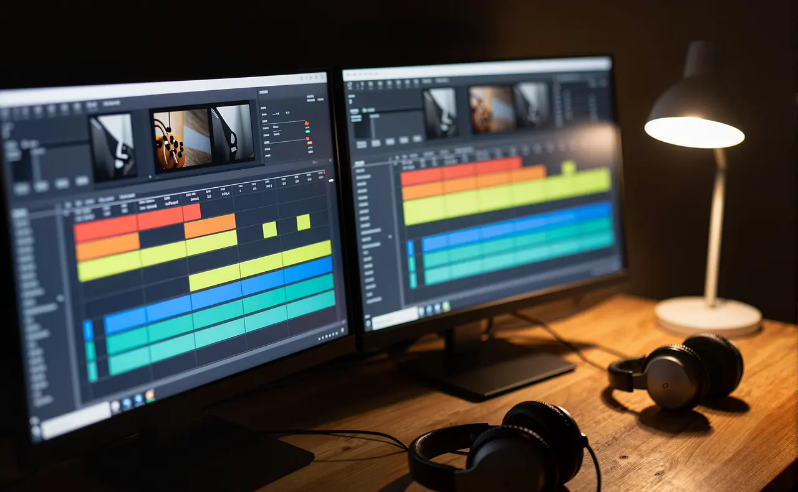

Edit Video
Làm video giới thiệu doanh nghiệp: kịch bản, quay thật hay motion graphic, dài bao lâu và tốn bao nhiêu
Đối tác, khách hàng và cả ứng viên đều muốn biết công ty bạn là ai trước khi gặp. Một video giới thiệu tốt làm việc đó thay bạn trên website, trong hồ sơ năng lực và ở mọi buổi chào hàng. Bài này đi qua kịch bản, cách chọn hình thức, độ dài theo nơi dùng, chuẩn bị quay và chi phí.

Video giới thiệu doanh nghiệp là video ngắn, thường dài 1 đến 3 phút, trả lời ba câu hỏi: công ty làm gì, làm cho ai, và vì sao nên tin. Khung kịch bản phổ biến gồm: mở đầu gây chú ý trong mười giây đầu, giới thiệu doanh nghiệp, sản phẩm hoặc dịch vụ chính, năng lực và cách làm, bằng chứng (dự án, khách hàng, chứng nhận), con người, và lời mời liên hệ. Nếu bạn có nhà xưởng, công trình, đội ngũ để quay, video quay thật tạo niềm tin tốt nhất; nếu dịch vụ khó quay như phần mềm, tài chính, logistics, motion graphic giải thích rõ hơn; nhiều video kết hợp cả hai. Tại Dream Labs, dựng video từ cảnh quay của bạn bắt đầu từ 800.000đ, motion graphic từ 2.000.000đ.
Bài này dành cho doanh nghiệp đang chuẩn bị làm video giới thiệu lần đầu hoặc làm lại bản cũ đã lỗi thời. Nếu bạn chưa rõ motion graphic là gì, bài video motion graphic là gì giải thích từ đầu.
Video giới thiệu dùng ở đâu
Trước khi viết kịch bản, hãy liệt kê nơi video sẽ xuất hiện, vì mỗi nơi cần độ dài, tỷ lệ khung hình và cách mở đầu khác nhau:
- Trang Giới thiệu trên website: người xem đã chủ động tìm hiểu, chấp nhận video dài hơn.
- Hồ sơ năng lực và email chào hàng: gắn mã QR hoặc đường dẫn, người nhận thường xem trên điện thoại.
- Buổi thuyết trình, chào hàng trực tiếp: chiếu trên màn hình lớn, có tiếng.
- Hội chợ, sảnh văn phòng: phát lặp trên màn hình, thường không có tiếng, nên cần phụ đề và hình ảnh tự kể chuyện.
- Tuyển dụng: nhấn vào con người, môi trường làm việc.
- Mạng xã hội: bản cắt ngắn, khung dọc 9:16, mở đầu mạnh trong vài giây đầu.
Nên dài bao lâu
Không có độ dài chuẩn cho mọi doanh nghiệp, nhưng có thể chọn theo nơi dùng chính. Bảng dưới là gợi ý dựa trên cách người xem tiếp nhận ở từng nơi, không phải quy định:
| Nơi dùng | Độ dài gợi ý | Khung hình | Lưu ý |
|---|---|---|---|
| Website, YouTube | 1,5 đến 3 phút | Ngang 16:9 | Có thể có phỏng vấn lãnh đạo |
| Chào hàng, thuyết trình | 1 đến 2 phút | Ngang 16:9 | Nhấn năng lực và dự án liên quan khách |
| Hội chợ, màn hình sảnh | 30 giây đến 1 phút, phát lặp | Theo màn hình | Phụ đề, chữ lớn, không cần tiếng |
| Facebook, TikTok, Reels | 15 đến 60 giây | Dọc 9:16 hoặc vuông 1:1 | Vào thẳng ý chính, phụ đề luôn bật |
| Tuyển dụng | 1 đến 2 phút | Ngang hoặc dọc | Con người và môi trường làm việc |
Cách tiết kiệm là làm một bản chính dài, rồi cắt thêm vài bản ngắn và bản dọc từ cùng cảnh quay. Hãy báo trước điều này cho người quay để họ chừa khoảng hình cho khung dọc.
Khung kịch bản video giới thiệu doanh nghiệp
Kịch bản quyết định video có dễ hiểu hay không, nhiều hơn máy quay hay hiệu ứng. Một khung bảy phần dễ áp dụng:
- Mở đầu (khoảng 10 giây): một hình ảnh mạnh và một câu nói thẳng giá trị, không mở bằng logo xoay dài.
- Chúng tôi là ai: tên, lĩnh vực, năm thành lập, quy mô, nói trong vài câu.
- Làm gì, cho ai: sản phẩm hoặc dịch vụ chính, nhóm khách chính.
- Làm như thế nào: quy trình, máy móc, kiểm soát chất lượng, điểm khác biệt.
- Bằng chứng: dự án tiêu biểu, khách hàng (nếu được phép nêu), chứng nhận.
- Con người: đội ngũ đang làm việc, một hai câu phỏng vấn thật.
- Kết: câu chốt thông điệp, thông tin liên hệ, website.
Ví dụ minh họa
Ví dụ minh họa, không phải khách hàng thật. Một xưởng sản xuất bao bì giấy ở Bình Dương muốn video 2 phút cho website và buổi chào hàng với nhà phân phối. Mở đầu bằng cảnh máy in chạy và câu "Mỗi ngày, hộp giấy của chúng tôi đi cùng sản phẩm của nhiều thương hiệu Việt". Tiếp theo là cảnh xưởng toàn cảnh, giám đốc nói ngắn về lịch sử, cảnh các công đoạn in, cắt, dán, kiểm tra. Phần bằng chứng là cảnh sản phẩm hoàn thiện và chứng nhận. Kết bằng cảnh đội ngũ trước xưởng, địa chỉ và số điện thoại.
Lời dẫn hay phỏng vấn
Lời dẫn (voice-over) giúp kiểm soát nội dung và nhịp, dễ sửa. Phỏng vấn người thật tạo cảm giác chân thật hơn nhưng cần người nói tự nhiên trước máy. Cách phổ biến là lời dẫn làm xương sống, chèn vài câu phỏng vấn ngắn. Khi viết lời dẫn, hãy đọc to để kiểm tra; câu nghe dễ hiểu thường ngắn hơn câu viết.
Quay thật, motion graphic hay kết hợp
- Quay thật: hợp với sản xuất, xây dựng, nhà hàng, khách sạn, phòng khám, nơi có không gian và con người để thấy. Tạo niềm tin mạnh nhưng phụ thuộc địa điểm, thời tiết, người lên hình, và khó sửa nội dung sau này.
- Motion graphic: hợp với phần mềm, tài chính, bảo hiểm, logistics, dịch vụ tư vấn. Giải thích quy trình và số liệu rõ ràng, dễ cập nhật khi đổi thông tin, không cần buổi quay.
- Kết hợp: quay con người và không gian, chèn đoạn đồ họa giải thích quy trình hoặc số liệu, thêm logo động ở đầu và cuối. Đây là cách nhiều doanh nghiệp chọn.
Muốn xem chi tiết các loại motion graphic và cách tính giá, đọc bài video motion graphic giới thiệu sản phẩm.
Chuẩn bị buổi quay
Một buổi quay chuẩn bị kỹ tiết kiệm nhiều hơn mọi mẹo dựng. Danh sách nên có:
- Danh sách cảnh (shot list): viết từ kịch bản, mỗi ý cần cảnh nào, ở đâu, ai xuất hiện.
- Dọn dẹp và sắp xếp: xưởng gọn, đồng phục chỉnh tề, che bớt giấy tờ, bảng thông tin nội bộ khỏi khung hình.
- Ánh sáng: tận dụng ánh sáng cửa sổ, tránh quay ngược sáng; khu vực tối cần đèn bổ sung.
- Âm thanh: phỏng vấn cần micro riêng và phòng yên tĩnh; tiếng máy móc chỉ nên là âm nền.
- Người lên hình: báo trước, cho xem câu hỏi phỏng vấn, xin đồng ý về việc dùng hình ảnh của nhân viên trong video công khai.
- Cảnh quay trên cao: ở Việt Nam, bay flycam thường phải xin phép theo quy định về tàu bay không người lái và không được bay ở khu vực cấm. Hãy hỏi trước đơn vị quay về giấy phép và địa điểm được bay.
Cảnh quay bằng điện thoại đời mới vẫn dựng được thành video tốt nếu đủ sáng, quay ngang, giữ máy chắc và âm thanh rõ. Bài edit video TikTok, Reels bán hàng có mẹo quay điện thoại dễ dựng.
Âm thanh, nhạc và phụ đề
Người xem bỏ qua hình hơi mờ dễ hơn tiếng rè. Lời dẫn nên thu ở phòng yên tĩnh, bằng giọng người thật hoặc giọng AI chất lượng tốt, tốc độ vừa phải. Nhạc nền phải có giấy phép dùng thương mại cho các kênh bạn định đăng; nhạc không rõ nguồn có thể khiến video bị tắt tiếng hoặc gỡ trên YouTube, Facebook. Phụ đề nên có ở mọi phiên bản, vì nhiều người xem trên điện thoại khi tắt tiếng và màn hình hội chợ thường không phát âm thanh. Nếu khách quốc tế là đối tượng chính, làm thêm bản phụ đề tiếng Anh.
Sai lầm thường gặp
- Mở đầu bằng logo xoay hoặc cảnh tòa nhà dài: người xem chưa biết vì sao nên xem tiếp.
- Liệt kê mọi thứ: lịch sử từng năm, toàn bộ danh mục sản phẩm, mười mấy khách hàng. Video nên giữ ba, bốn ý chính.
- Lời lẽ quảng cáo chung chung: "uy tín, chất lượng, chuyên nghiệp" mà không có hình ảnh chứng minh.
- Chỉ làm một bản ngang dài, rồi phải dựng lại khi cần bản ngắn cho mạng xã hội.
- Âm thanh phỏng vấn kém: thu bằng micro máy quay ở xa, lẫn tiếng ồn.
- Sửa kịch bản sau khi quay xong: thiếu cảnh, phải quay bổ sung.

Quy trình từ ý tưởng đến video hoàn chỉnh
- Brief: mục đích, người xem chính, nơi dùng, độ dài, các phiên bản cần xuất.
- Kịch bản và danh sách cảnh: duyệt lời dẫn, câu hỏi phỏng vấn, cảnh cần có trước khi quay.
- Quay hoặc thu thập cảnh có sẵn: gom footage, ảnh, logo, tài liệu vào một thư mục chung.
- Dựng bản nháp: sắp cảnh theo kịch bản, đặt lời dẫn và nhạc tạm để duyệt nhịp.
- Hoàn thiện: chỉnh màu, xử lý âm thanh, phụ đề, đồ họa chữ, logo động.
- Xuất bản: bản chính và các bản cắt ngắn theo từng tỷ lệ khung hình.
Góp ý nên gom gọn ở bước kịch bản và bản nháp; đổi ý ở bước hoàn thiện kéo theo sửa lại nhiều phần đã làm.
Chi phí làm video giới thiệu doanh nghiệp tại Dream Labs
Dream Labs dựng video giới thiệu từ cảnh quay, ảnh và tài liệu bạn đã có; nếu cần một buổi quay chỉn chu, phần quay được báo giá riêng. Gói Cơ bản 800.000đ/video hợp với bản giới thiệu rất ngắn dưới 60 giây cho mạng xã hội. Phần lớn video giới thiệu công ty dài 1 đến 3 phút, cần phụ đề động, motion text và xuất 3 tỷ lệ, thuộc gói Chuyên nghiệp 2.000.000đ/video. Video dài đến 10 phút, cần kịch bản dựng, sound design, đồ họa 3D và bộ 5 clip ngắn đi kèm thuộc gói Cao cấp 5.000.000đ/video.
| Gói | Giá | Thời gian | Bao gồm |
|---|---|---|---|
| Cơ bản | 800.000đ/video | 2 ngày4 vòng sửa | Video gọn gàng, có phụ đề để đăng đều đặn mà không mất thời gian tự dựng.
|
| Chuyên nghiệpPhổ biến nhất | 2.000.000đ/video | 3–4 ngày9 vòng sửa | Video giữ người xem tới cuối, dựng một lần dùng được cho TikTok, Reels và YouTube.
|
| Cao cấp | 5.000.000đ/video | 5–7 ngày18 vòng sửa | Video quảng cáo chỉn chu kèm 5 clip ngắn: đủ nội dung cho cả một chiến dịch.
|
Nếu doanh nghiệp không có cảnh quay hoặc dịch vụ khó quay, motion graphic là lựa chọn thay thế: gói Cơ bản 2.000.000đ/video cho logo animation hoặc video đến 15 giây, gói Chuyên nghiệp 5.000.000đ/3 video cho bộ 3 video ngắn có kịch bản, storyboard và lồng tiếng AI. Xem trang dựng video giới thiệu doanh nghiệp, trang video motion graphic và bảng giá. Cách tính giá dựng chi tiết có trong bài thuê edit video bao nhiêu tiền. Gửi footage qua Zalo 0934 246 420 để được gợi ý hướng dựng.
Câu hỏi thường gặp
Video giới thiệu doanh nghiệp nên dài bao nhiêu?
Bản chính cho website, chào hàng thường 1 đến 3 phút. Bản cho mạng xã hội nên 15 đến 60 giây. Làm một bản chính rồi cắt thêm bản ngắn là cách tiết kiệm.
Nên quay thật hay làm motion graphic?
Có nhà xưởng, công trình, đội ngũ để quay thì quay thật tạo niềm tin tốt hơn. Dịch vụ khó quay như phần mềm, tài chính thì motion graphic giải thích rõ hơn. Nhiều video kết hợp cả hai.
Quay bằng điện thoại có làm được video giới thiệu không?
Được, nếu cảnh đủ sáng, giữ máy chắc, quay đúng khung và âm thanh phỏng vấn thu bằng micro riêng. Cảnh quay điện thoại có kịch bản rõ thường cho video tốt hơn cảnh quay máy xịn nhưng thiếu kịch bản.
Cần chuẩn bị gì trước khi làm video giới thiệu?
Mục đích và nơi dùng video, thông tin doanh nghiệp, dự án tiêu biểu, logo, cảnh quay và ảnh có sẵn, danh sách người có thể lên hình và nội dung muốn họ nói.
Có cần xin phép nhân viên khi quay họ không?
Nên xin đồng ý trước khi dùng hình ảnh của nhân viên trong video đăng công khai, nhất là khi quay cận mặt hoặc phỏng vấn. Báo trước lịch quay để mọi người chuẩn bị.
Video giới thiệu có dùng lâu được không?
Thường dùng được vài năm nếu nội dung không gắn với số liệu hay giá thay đổi nhanh. Tránh đưa vào video những thông tin hay đổi; nếu dùng motion graphic, phần đó sửa lại dễ hơn.
Giá làm video giới thiệu doanh nghiệp tại Dream Labs bao nhiêu?
Dựng từ cảnh quay có sẵn: 800.000đ/video cho bản dưới 60 giây, 2.000.000đ/video cho video đến 3 phút, 5.000.000đ/video cho video đến 10 phút kèm bộ clip ngắn. Buổi quay được báo giá riêng.
Nguồn ảnh: ảnh minh họa do Dream Labs tạo bằng AI (ComfyUI · Z-Image Turbo), không phải ảnh chụp khách hàng hay dự án thật.
Bắt đầu cùng Dream Labs
Có cảnh quay công ty nhưng chưa thành video?
Gửi Dream Labs đường dẫn footage, ảnh sẵn có và nơi bạn định dùng video. Chúng tôi gợi ý khung kịch bản, độ dài và báo giá theo gói.